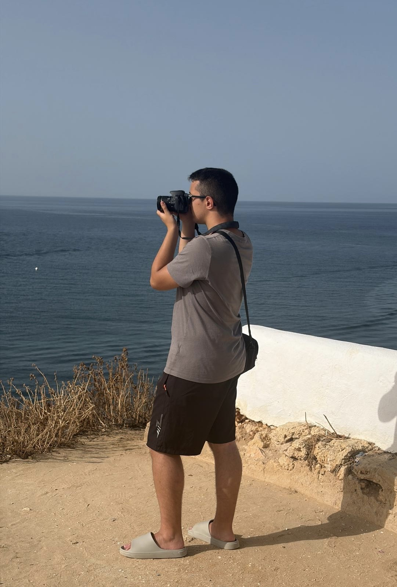
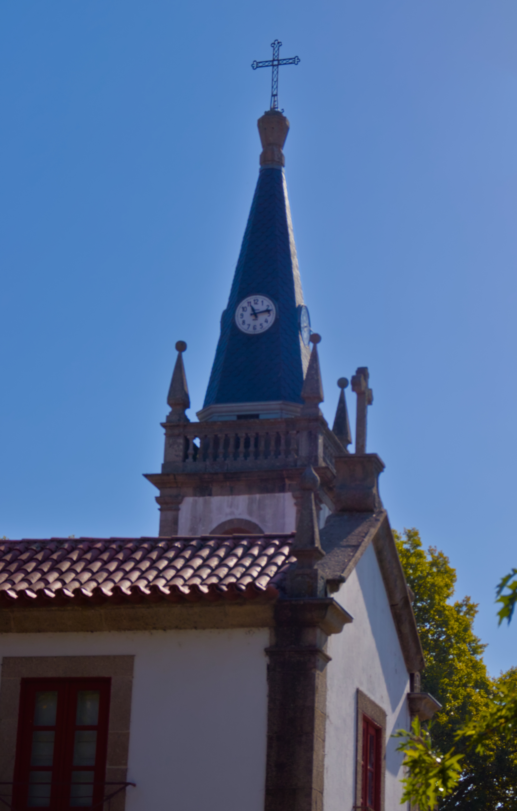
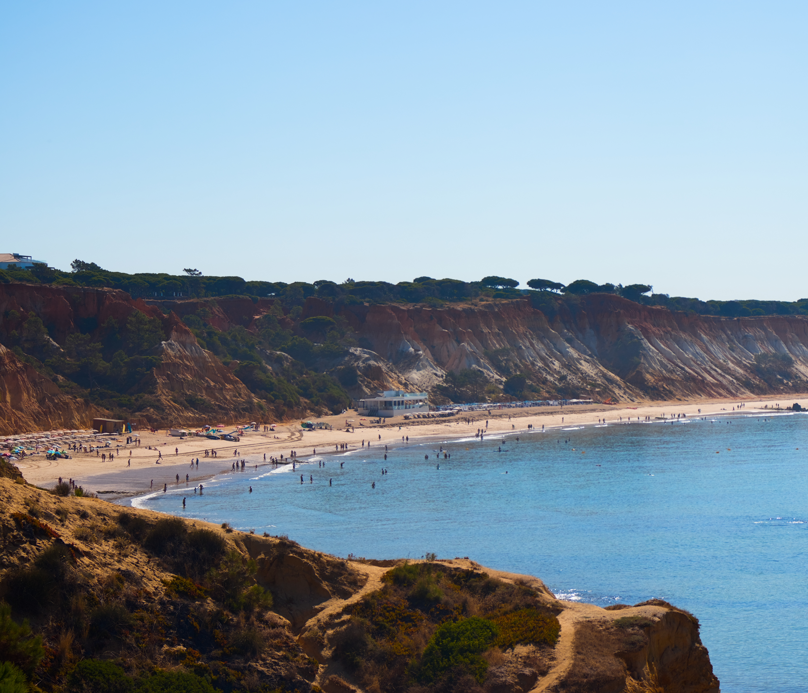

João
Barros
Fotografia é uma das minhas paixões.
Fotografo paisagens, animais, vegetação,
pessoas e arquitetura.



Sobre mim
Comecei esta aventura de fotografia desde 2024, começando com o meu telemóvel e com
uma Cannon 200D.
Utilizo como software de edição o Darktable, que serve como alterantiva para o Lightroom.
Contacto: joao.queiros2003@gmail.com